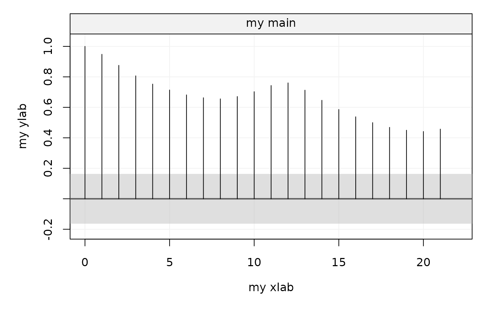

The function plots the output of the theo_acf and auto_corr functions (autocovariance or autocorrelation functions).
# S3 method for simtsACF plot( x, xlab = NULL, ylab = NULL, show.ci = TRUE, alpha = NULL, col_ci = NULL, transparency = NULL, main = NULL, parValue = NULL, ... )
Arguments
| x | An |
|---|---|
| xlab | A |
| ylab | A |
| show.ci | A |
| alpha | A |
| col_ci | A |
| transparency | A |
| main | A |
| parValue | A |
| ... | Additional parameters |
Author
Yunxiang Zhang, Stéphane Guerrier and Yuming Zhang
Examples
# Calculate the Autocorrelation m = auto_corr(datasets::AirPassengers) # Plot with 95% CI plot(m)# Plot with 90% CI plot(m, alpha = 0.1) # Plot without 95% CI plot(m, show.ci = FALSE)
# More customized CI plot(m, xlab = "my xlab", ylab = "my ylab", show.ci = TRUE, alpha = NULL, col_ci = "grey", transparency = 0.5, main = "my main") 